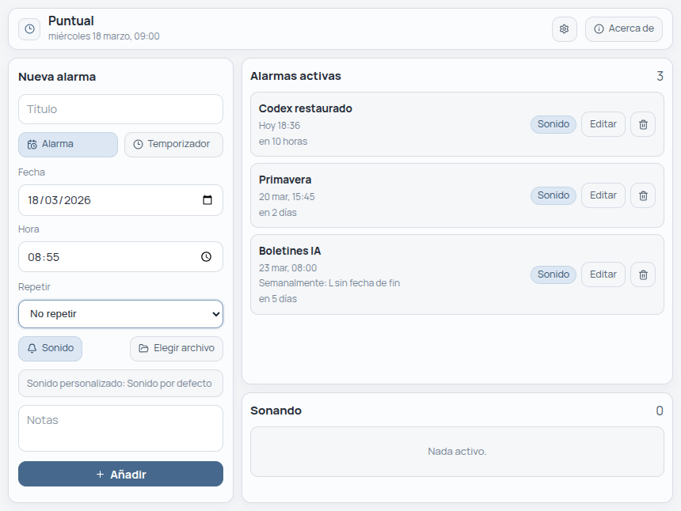
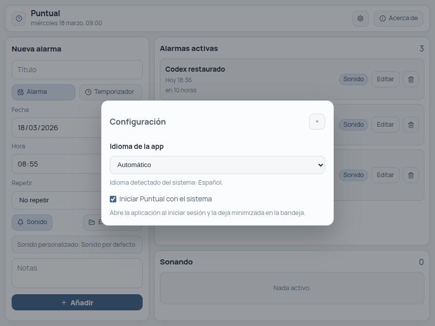
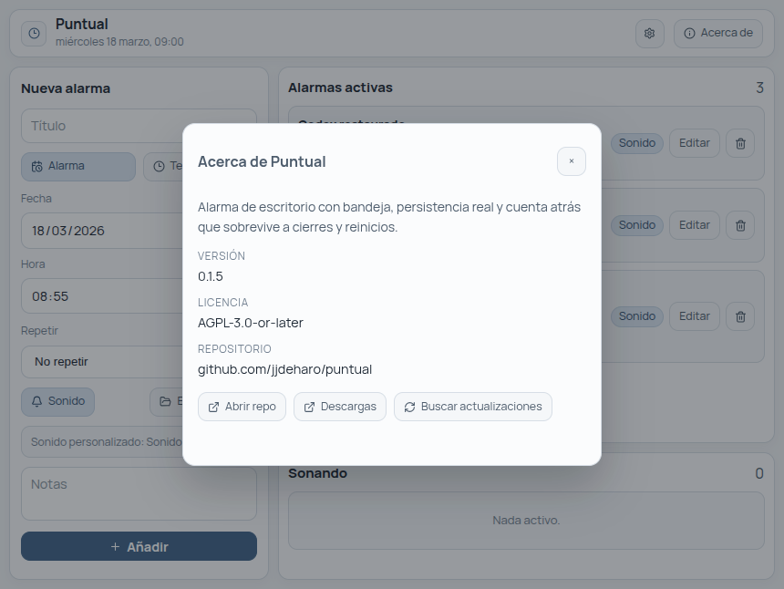

Alarmas y temporizadores
Puedes crear una alarma para una fecha y hora concretas o lanzar un temporizador con cuenta atrás. El formulario mantiene el modo que estás usando para no entorpecer el flujo.
Alarma de escritorio para Linux, Windows y macOS
Puntual está pensado para usarlo como una utilidad real de escritorio: vive en la bandeja, recuerda tus alarmas, permite recurrencias, admite sonidos personalizados y no obliga a dejar una web abierta para que funcione.
También permite alarmas repetidas: diarias, en días laborables, semanales, mensuales y anuales, con fecha de fin o número máximo de repeticiones.

Qué hace
Puedes crear una alarma para una fecha y hora concretas o lanzar un temporizador con cuenta atrás. El formulario mantiene el modo que estás usando para no entorpecer el flujo.
Las alarmas quedan guardadas localmente. Si cierras la ventana o reinicias el sistema, Puntual recupera su estado y sigue siendo una herramienta de escritorio, no un experimento.
Permite repeticiones diarias, laborales, semanales, mensuales y anuales, con fecha de fin o límite de repeticiones cuando lo necesitas.
Cada alarma o temporizador puede usar el sonido integrado o un archivo propio. El último sonido seleccionado queda listo por defecto para la siguiente creación.
La app puede iniciar con el sistema y quedarse minimizada en la bandeja. Así está disponible sin ocupar espacio ni interrumpir el trabajo.
Incluye acceso a la release publicada y comprobación manual de actualizaciones. En esta misma página también tienes los enlaces de descarga listos para cada sistema.
Cómo se usa
Selecciona si quieres programar una fecha concreta o una cuenta atrás.
Añade recurrencia, notas y un sonido integrado o personalizado si te hace falta.
La app puede quedarse en la bandeja y seguir pendiente de las alarmas sin dejar la ventana abierta.
Capturas


Descargas
Paquete `.deb` para Debian, Ubuntu, MX Linux y derivadas, además de AppImage para usar sin instalar.
Ejecutable portátil y paquete `.zip` generados automáticamente en cada release publicada.
Archivo `.zip` preparado desde la release para usar la app en sistemas Apple.
Release publicada
Cargando datos de GitHub...